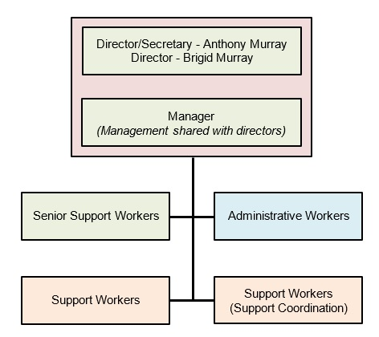

Purpose and Scope
The purpose of this policy and procedure is to demonstrate Wagtail Services’ commitment to sound governance, and to document how governance is carried out and reviewed within the business. It applies to all staff and meets relevant legislation, regulations and Standards as set out in Schedule 1, Legislative References.
Applicable NDIS Practice Standards
Governance and Operational Management
Outcome: Each Participant’s support is overseen by robust governance and operational management systems relevant (proportionate) to the size and scale of the provider and the scope and complexity of supports delivered.
Indicators:
- Opportunities are provided by the governing body for people with disability to contribute to governance and policy development.
- A defined structure is implemented to meet financial, legislative, regulatory and contractual responsibilities.
- Skills and knowledge required for governance are identified and training is undertaken by members of the governing body.
- The provider is managed by suitably qualified and/or experienced persons with clearly defined responsibility, authority and accountability.
- Management performance is monitored to drive continuous improvement in management practices.
Definitions
Key personnel: individuals who hold key executive, management or operational positions in an organisation, such as Directors, Managers, Board members, Chief Executive Officers or Chairpersons. 1
Policy
Wagtail Services has effective systems and processes in place to guide and support its overall direction, effectiveness, supervision processes and internal and external accountability. Accountable and transparent governance arrangements ensure Wagtail Services:
- complies with relevant legislation, regulations and contractual arrangements;
- supports and develops its staff; and
- delivers quality and safe services to its Participants.
Procedures
Wagtail Services is the trading name for AJBM Services Pty Ltd, which is the corporate trustee for AJBM Family Trust.
- Australian Company Number: 622 165 726
- Australian Business Number: 36 933 496 540
- Directors: Brigid Mary Murray and Anthony Joseph Murray
Figure 1. Wagtail Services Organisation Chart

Wagtail Services’ Leadership Team is made up of the Directors (who may act in a managerial capacity – sharing managerial responsibilities with an appointed Manager), Manager and Senior Support Workers. The Leadership Team meets regularly (fortnightly to monthly). An Agenda is circulated prior to every meeting and Minutes are kept by a member of the Leadership Team or by an Administrative Worker. Leadership Team meetings cover service provision, financial, data, IT and service quality information (including incidents and Participant feedback and complaints).
Wagtail has introduced Visualcare as our client record management system.
Recognising that Participant input to governance improves service outcomes, Wagtail Services involves them in its governance processes where possible. This may include involving them in service delivery and planning days and/or certain Leadership Team meetings (see Wagtail Services’ Feedback and Complaints Policy and Procedure).
Leadership Team Qualifications, Training and Development
Wagtail Services must be managed by suitably qualified and experienced people with clearly defined responsibilities, authority and accountability for the provision of supports to Participants.
Collectively, the Leadership Team must have the qualifications and experience to meet Wagtail Services’ financial, legislative, regulatory and contractual responsibilities, and to monitor and respond to quality and safeguarding matters associated with delivering NDIS supports to Participants.
As per Wagtail Services’ Human Resources Policy and Procedure, all Leadership Team members must receive initial and ongoing training, be offered development opportunities and participate in annual performance reviews, to support continuous improvement in Wagtail Services’ management practices.
The Directors will monitor the skills and knowledge required for the Leadership Team to effectively govern Wagtail Services and ensure they undertake relevant training to address any gaps.
Responsibilities
Directors (operating as Manager as required)
- Works with company accountant to manage company finances, tax etc
- Monitor business performance and steer the direction/growth of the business
- Ensure compliance with all relevant statutory requirements, including those stipulated by the NDIS Commission.
- Oversee major capital acquisitions (cars, property etc)
- Recruit and select staff and volunteers
- Oversee payroll
- Maintain a very close working relationship with the appointed Manager
Manager
- Report to Directors
- Assist Directors in their role when required
- Ensure compliance with all relevant statutory requirements, including those stipulated by the NDIS Commission
- Coordinate activities of the service, including day to day operations
- Oversee Participant and staff welfare
- Oversee rostering
- Proactively build and maintain positive stakeholder relationships to ensure sustainability and growth
- Develop and implement annual business plan
- Develop annual budgets and financial reports
- Maintain and implement policies and procedures
- Manage Work Health and Safety, assigning responsibilities to staff as required
Senior Support Worker
Responsibilities of a support worker plus
- Introduce new Participants into the service and assist with processing
- Work closely with allocated Participants and their families/informal supports
- Match Participants to suitable support workers
- Monitor the achievement of Participant goals and proactively tailor Participant supports
- Train and monitor allocated workers
- Assist with rostering
- Attend regular Leadership Team meetings
Support Worker
- Support our Participants to establish and maintain relationships through access to work, recreational activities, sports, arts and education in the community
- Provide assistance with activities of daily living and household tasks (including supported independent living), with a focus on increasing the independence of our Participants
- Work effectively with our Participants’ families, friends and their other providers to promote our Participants’ goals
- Conduct research, develop resources and perform administrative tasks to support Participants and to keep Wagtail Services running effectively as a business
- Keep accurate and full records of supports provided, expenditure and other work notes and reports as required
- Maintain current police checks, first aid certificate, driver licence, vehicle registration and comprehensive insurance
- Contribute to the development of Wagtail Services through exchanging skills and ideas with colleagues. Work cooperatively and cheerfully within a team environment
- Engage in training opportunities to increase skills and knowledge, thereby improving support provision
Support Worker (Support Coordination)
- Provide support coordination services for Participants who have support coordination included in their NDIS plan
- Manage conflict of interest when Participants accessing support coordination services also access other services provided by Wagtail Services
Administrative Workers
- Utilise the CRM/rostering system (Visualcare) to perform day-to-day operational tasks, including many listed below. Reduce the use of paper wherever possible
- Manage communication
- Assist with rostering
- Organise and schedule appointments
- Attend meetings as required and take minutes and notes
- Assist in the preparation of reports
- Develop and maintain a filing system
- Assist to update and maintain company policies and procedures
- Provide general support to visitors
- Act as the point of contact for staff and Participants
- Liaise with Directors, Manager and other staff and handle requests
- Find ways to improve administrative processes
Supporting Documents
Documents relevant to this policy and procedure include:
- Organisation Chart
- Meeting Agenda
- Meeting Minutes
Monitoring and Review
This policy and procedure will be reviewed at least every two years by the Leadership Team. Reviews will incorporate staff, Participant and other stakeholder feedback, where relevant.
Annual satisfaction surveys will assess Participant and staff satisfaction with Wagtail Services’ governance processes and provide stakeholders with the opportunity to provide feedback on areas for improvement.
Wagtail Services’ Continuous Improvement Register will be used to record improvements identified and monitor the progress of their implementation. Where relevant, this information will be considered as part of Wagtail Services’ service planning and delivery processes.
_________________________
1 Suitability Assessment Process Guide – Information
for NDIS Providers and their Key Personnel, NDIS Quality and
Safeguards Commission, July 2018